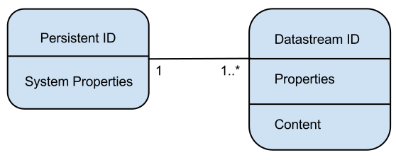
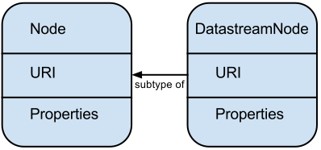
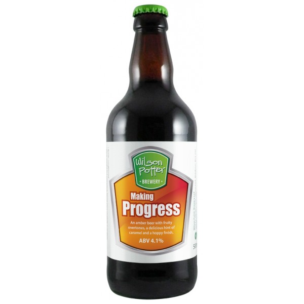

Hydra on top of Fedora 4 Justin Coyne Data Curation Experts Hydra Connect 2 — September 2014 What will it take to getHydra on Fedora 4? Code Contributors Testing Documenting $$$ Thanks for your help! Fedora 4 contributors UCSD Stanford UVA Columbia Everyone who contributes to Duraspace ActiveFedora 8 contributors Stanford PSU How are we getting here? Change the data model  How are we getting here? Change the data model  How are we getting here? Removed legacy features Disseminators RELS-EXT datastream How are we getting here? Do it the Fedora 4 way Datastreams (size, mime-type, original file name) Fixity checking Versions Walking the tree We're Alpha! hydra-jetty fedora-4/master branch active-fedora 8 fedora-4 branch hydra-head 8 fedora-4 branch hydra-derivatives fedora-4 branch hydra-collections fedora-4 branch sufia fedora-4 branch What is left to do RDF schema for rightsMetadata load_instance_from_solr (pull request pending) Upgrade to ActiveTriples 0.3.0 (in progress) LDP spec compatability (in progress) Optimize active-fedora's interaction with Fedora Use E-Tags to detect concurrent modification A migration script What did we do to get here? Cheers! Sláinte! Prost! 